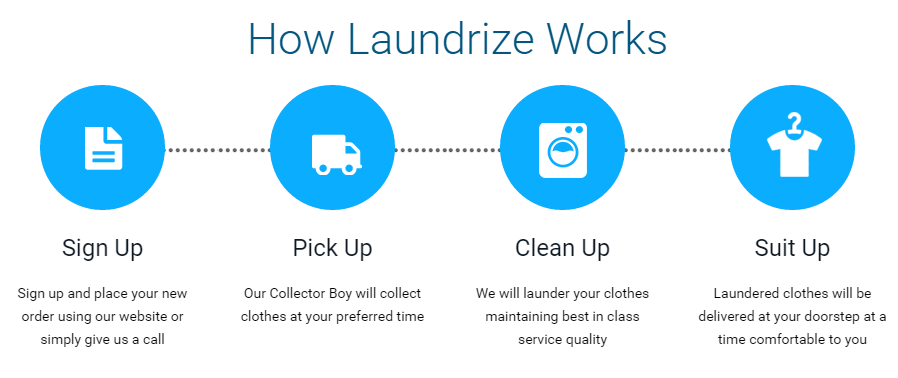

---
# Feel free to add content and custom Front Matter to this file.
# To modify the layout, see https://jekyllrb.com/docs/themes/#overriding-theme-defaults

layout: main
home: true
---

<!-- <section>
    <header>
        <h2>About the project</h2>
    </header> -->
    <div class="content">
        <main class="site-main">
            <section class="section section-headings">
                <div class="wrapper">
                    <header>
                        <p>Уморени сте от пране, простиране, гладене и сгъване на дрехи ?</p>
                        <p>Управлявате бизнес в сферите на хотелиерството, ресторантьорството, болнична помощ и др.?</p>
                        <p>Ние ще Ви помогнем с безупречно изпиране, сушене, сгъване и доставка на адрес на Вашето
                            домашно пране, спално бельо, покривки или работни дрехи.</p>
                    </header>
                </div>
            </section>

            <section class="section section-check">
                <div class="wrapper">

                    <header>
                        <h2><a href="#">Готова ли е поръчката Ви ?</a></h2>
                    </header>
                    <div class="section-content">

                        <form action="#">

                            <div class="field">
                                <input type="text" name="text" id="text" placeholder="Въведи номер на поръчка">
                                <input type="submit" value="Провери">
                            </div>

                        </form>

                    </div>
                </div>
            </section>

            <section class="section section-figure">
                <div class="main-figure">
                    <p>Как работи ?</p>
                    <div class="figure"></div>
                </div>
                <p>Направи запитване още сега на: 0888 888 888</p>
                <div class="contacts">
                    <i class="fas fa-phone-square"></i>
                    <i class="fab fa-viber"></i>
                    <i class="fab fa-whatsapp-square"></i>
                </div>
            </section>
            
       </main>
    </div>
<!-- </section> -->
